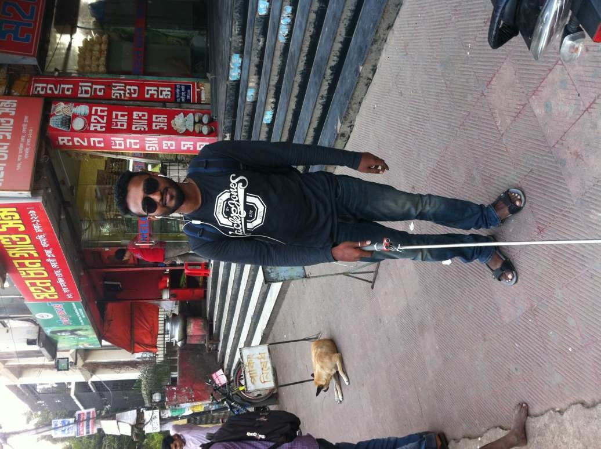
Problem Statement
Visually challenged persons face great difficulty in independent mobility and use the white cane as a mobility aid to detect close-by obstacles on the ground. However, the cane has many limitations. It can only detect obstacles up to knee level. Hence, the user cannot detect raised obstacles like elevated bars and frequently collides with them. Another problem is that the cane can only detect obstacles within 1 meter from the user. Also, obstacles like moving vehicles cannot be detected until dangerously close to the person. There is no smart cane available for automatic navigation to guide a person in outdoor navigation independently in urban areas, regardless of the person’s hearing status for reaching a particular destination. Based in WHO report (2011), 15% of our population is disabled and among them more than 4 million people are visual impaired. Almost 90% of the blind persons live in developing countries, with a majority below poverty line and hi-tech products are unaffordable to them. Access to such a smart cane is not available for individuals who are blind.
Solution Statement
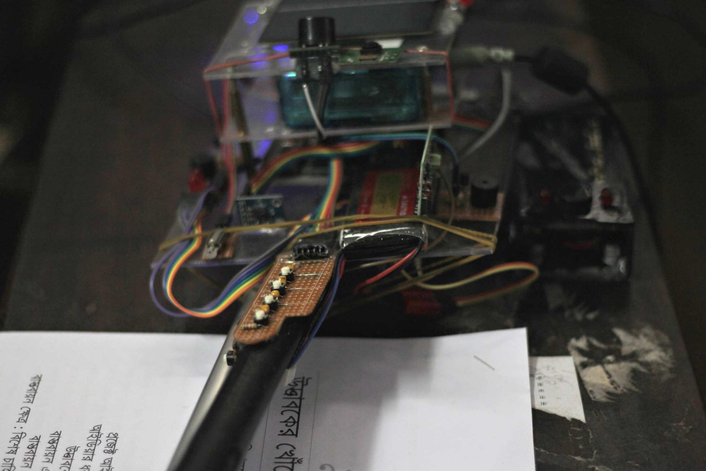
According to researchers, 83% of the physical input data from environment come through “Eyes”. Nearly 4 million of world’s population is blind, and hence deprived of one of the most important and informative asset “Eyes”. People with complete blindness or low vision often have a difficult time self-navigating outside well-known environments. In fact, physical movement is one of the biggest challenges for blind people. Traveling or simply walking down a crowded street may create great difficulty. Because of this, many people with low vision will bring a sighted friend, family member or walking cane to help navigate unknown environments. To make them independent we are proposing ultra-modern smart cane. We noticed that normal blind canes used by blinds have certain limitations like detecting pot-holes, detect objects, above knee obstacles etc. at the same time currently available sensor equipped canes are very costly and unaffordable. We want to develop an economical sensor equipped cane capable of assisting blind to navigate easily via vibratory and auditory signals so that their regular movement will become more secure. There will be no chance to get collide with any obstacle. There will be no dependency. They can do their regular work without any help. They can go to shop, office, refreshing walk, education etc.
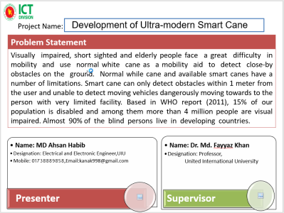 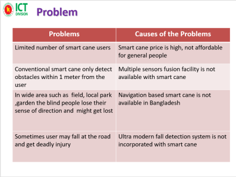 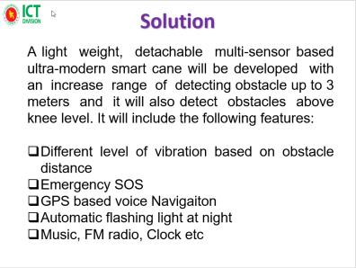 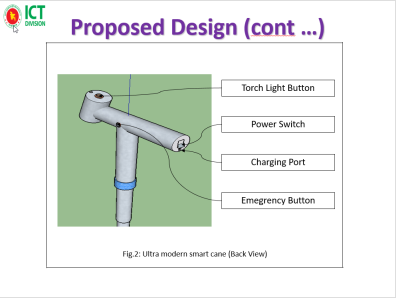
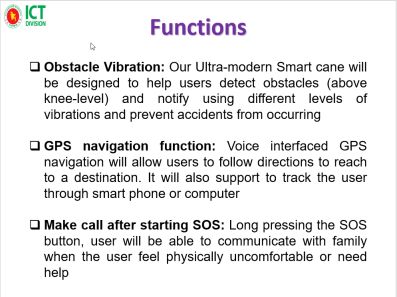
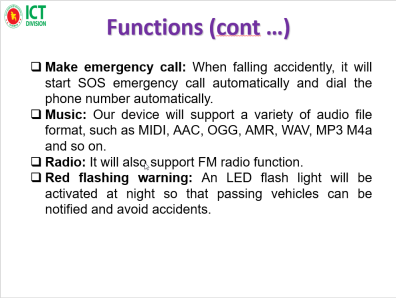
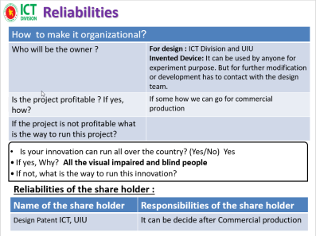
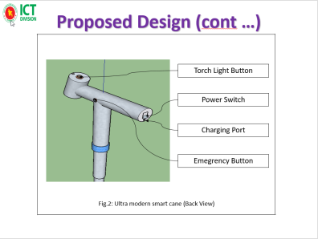
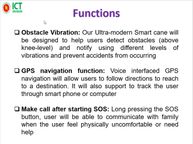
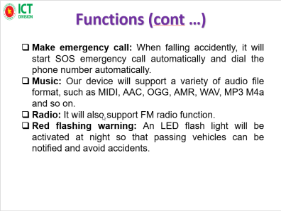
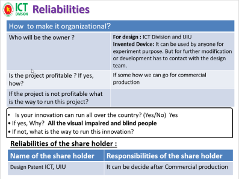